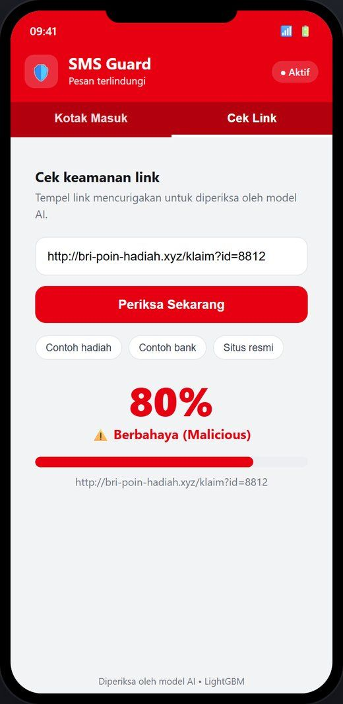
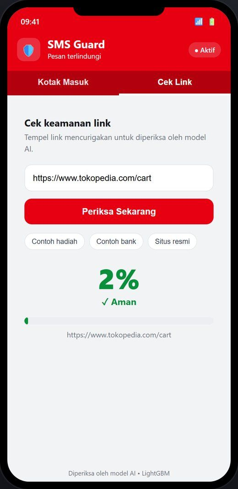
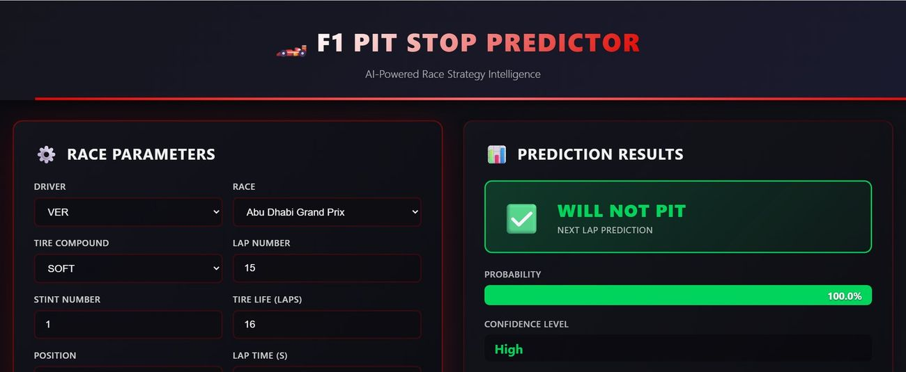
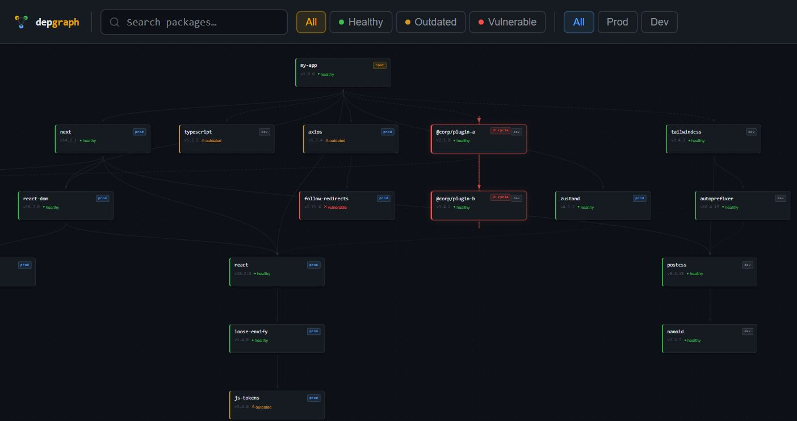
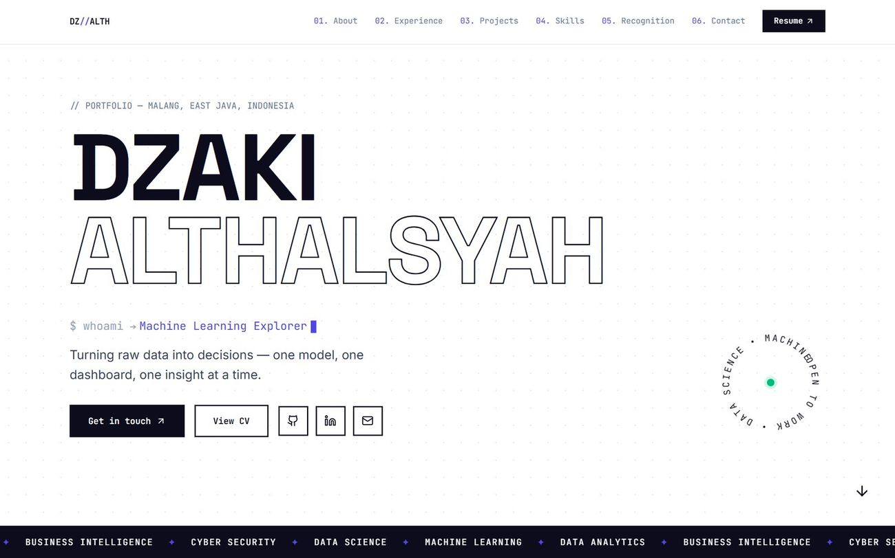
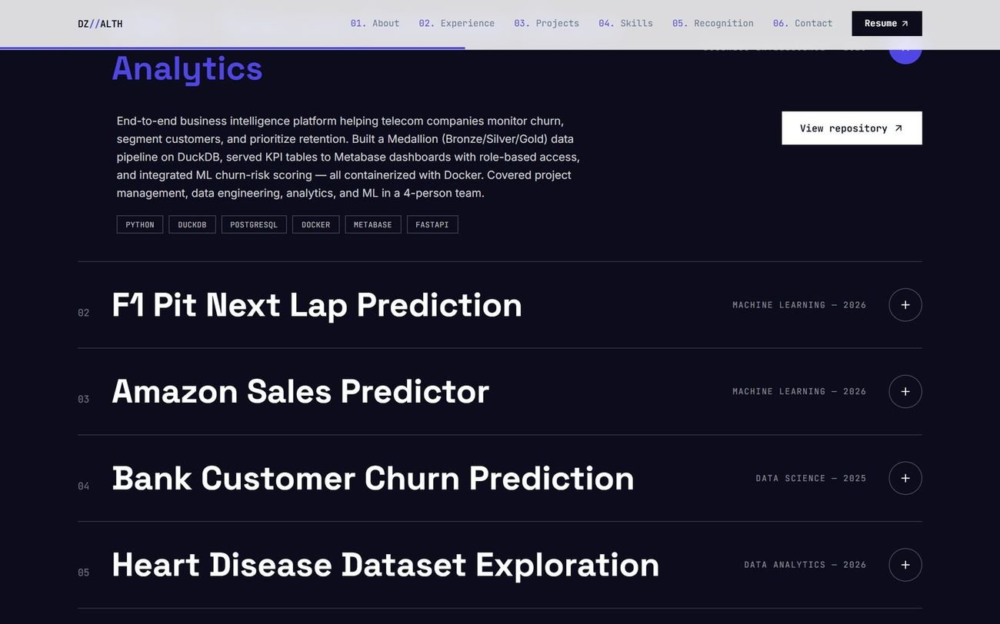

DZ//ALTH
PORTOFOLIO 2026 · IT DEVELOPMENT
// SOFTWARE, AI, DAN DATA
DZAKI
ALTHALSYAH
$ whoami → AI Engineer Intern · Mahasiswa Sistem Informasi
Saya membangun software yang memangkas pekerjaan manual: dari aplikasi validasi kontrak berbasis AI di Pertamina sampai model machine learning yang disajikan lewat API dan aplikasi.
dz4ic7@gmail.com · +62 811-7818-801
github.com/dzakialthalsy · linkedin.com/in/dzaki-althalsyah-27z
dzaki-althalsyah-portofolio.vercel.app · Malang, Jawa Timur
ISI
| 01 | Tentang Saya dan Keahlian | 02 |
| 02 | VASKO · Pertamina Patra Niaga | 03 |
| 03 | SMS Guard dan URL Detection API | 04 |
| 04 | F1 Pit Stop Predictor | 05 |
| 05 | Proyek Lainnya | 06-07 |
| 06 | Pengalaman dan Kontak | 08 |
02
Studi Kasus · Magang
VASKO: Validasi Kontrak Berbasis AI
PT PERTAMINA PATRA NIAGA · PERTAMINA CAMP 2026
AI ENGINEER INTERN · BACKEND DAN INTEGRASI AI
SEP 2026 - SEKARANG · TIM 3 ORANG
Masalah
Setelah kontrak terbit, belum ada sistem untuk memeriksa kelengkapan dan isi paket kontrak. Satu paket bisa ratusan halaman, sebagian berupa hasil scan, dan pemeriksaannya masih manual.
Peran Saya
Merancang arsitektur sistem dan membangun backend: skema basis data, alur validasi, layanan OCR, dan integrasi LLM. Tampilan dikerjakan rekan tim.
Batasan
Mentor menargetkan validasi di bawah 5 menit, hasil harus sama setiap diulang, data tidak boleh disebar, dan server yang tersedia hanya VPS 4 core / 4 GB.
Alur Sistem yang Saya Bangun
01 · INPUTUnggah PaketPDF dan Word kontrak, amandemen, dan dokumen pendukung
→
02 · OCRLapisan TeksOCR lokal (PP-OCR, ONNX Runtime) untuk halaman scan
→
03 · LLMBaca KlausulLLM membaca klausul dan mengutip sumbernya per halaman
→
04 · RULESValidasiAturan pemeriksaan, tingkat keyakinan, dan caching jawaban
→
05 · OUTPUTHasilLaporan PDF, impor Excel, Google Drive, dan master data
Yang Saya Kerjakan
- Backend Next.js dan TypeScript dengan Prisma dan PostgreSQL, skema 26 tabel.
- Layanan OCR Python yang memberi lapisan teks tak terlihat pada scan, sehingga alur validasi lama tetap jalan tanpa diubah.
- OCR paralel dan pembacaan AI berjalan bersamaan untuk memangkas waktu tunggu.
- Jawaban AI disimpan per isi permintaan, jadi dokumen yang sama selalu memberi hasil yang sama.
- Uji beban di Docker dengan batas CPU dan memori setara VPS produksi.
Next.jsTypeScriptPrismaPostgreSQLPythonPP-OCRONNX RuntimeLLM APIDocker
Hasil
527 → 292-335 detikvalidasi paket 268 halaman scan, hingga 45% lebih cepat
5 dari 5 putaranhasil validasi identik saat paket yang sama diproses ulang
1,5 GBmemori puncak OCR dan backend, muat di VPS 4 GB
Tampilan aplikasi tidak disertakan karena memuat dokumen internal Pertamina.
03
Studi Kasus · Mobile dan Machine Learning
SMS Guard dan URL Detection API
PROYEK PRIBADI · 2026
GITHUB.COM/DZAKIALTHALSY/SMSGUARD
GITHUB.COM/DZAKIALTHALSY/PSD_MALICIOUS_URL_PREDICTION
Masalah
Penipuan lewat link di SMS ("selamat Anda menang hadiah", "akun diblokir", "paket tertahan") masih banyak memakan korban, dan pengguna sering sudah menekan link sebelum sadar.
Pendekatan
- Model: LightGBM yang mengklasifikasikan URL aman atau berbahaya dari 38 fitur leksikal (entropi Shannon, struktur domain, kedalaman path, validitas TLD, deteksi IP). Cepat dan offline, tanpa membuka halaman web.
- API: FastAPI untuk prediksi satu URL, batch, dan unggah file CSV atau Excel.
- Aplikasi: React Native dengan modul native Java (BroadcastReceiver) yang menangkap SMS masuk bahkan saat aplikasi tertutup, lalu memunculkan notifikasi peringatan.
Hasil
- Setiap link di SMS dicek otomatis secara real-time dengan tiga tingkat risiko: Aman, Waspada, Berbahaya.
- Hanya URL yang dikirim ke model, bukan isi SMS, sehingga privasi pengguna terjaga.
React NativeJavaFastAPILightGBMPandasFeature Engineering

Link penipuan: risiko 80%

Situs resmi: risiko 2%
04
Studi Kasus · Machine Learning Full-stack
F1 Pit Stop Predictor
PROYEK MACHINE LEARNING · 2026
GITHUB.COM/DZAKIALTHALSY/
MACHINE-LEARNING_F1-PIT-NEXT-LAP-PREDICTION

Aplikasi web yang berjalan: parameter balap di kiri, hasil prediksi model di kanan.
95,9%akurasi
91,2%F1-score
98,8%AUC
Pipeline
01Data Laptelemetri dan ban
→
02Cleaningmissing, outlier
→
03Fiturencoding, scaling
→
04Model3 algoritma boosting
→
05DeployFastAPI + React
Masalah
Strategi pit stop menentukan hasil balapan. Pertanyaannya: dari data telemetri dan kondisi ban, apakah seorang pembalap akan masuk pit di lap berikutnya?
Pendekatan
- Membersihkan data lap: penanganan missing value, outlier, encoding, scaling, dan seleksi fitur.
- Membandingkan LightGBM, XGBoost, dan CatBoost, lalu mengoptimalkan ambang keputusan (0,85) untuk kelas pit yang jarang.
- Menyajikan model lewat FastAPI dan antarmuka React dengan 15 parameter balap, untuk prediksi real-time maupun batch.
Kenapa Relevan
Pola kerjanya sama dengan analitik di industri otomotif dan manufaktur: data sensor dan kondisi komponen diubah menjadi keputusan yang bisa langsung dipakai.
PythonLightGBMXGBoostCatBoostScikit-learnReactFastAPI
05 / Proyek Lainnya · Developer Tools dan Keamanan
DepShield
SUPPLY-CHAIN SECURITY SCANNER · 2026
CLI yang memeriksa dependensi npm dan pip sebelum diinstal, karena paket berbahaya biasanya bekerja saat instalasi, jauh sebelum tes dijalankan. Mendeteksi typosquatting (jarak Levenshtein), malware, dan CVE lewat OSV.dev, dengan keluaran tabel, JSON, atau SARIF untuk CI.
$ depshield scan ./demo-app
✔ OSV malware ✔ CVE scan ✔ Metadata
CRITICAL 1 issue
✗ lodahs@4.17.21 [Malware]
reason: Malicious package
MEDIUM 4 issues
◆ reqeust@2.88.0 [Typosquat]
reason: Possible typosquat of "request"
◆ express@4.17.1 [CVE] cvss 5.0
◆ axios@0.21.0 [CVE] cvss 5.0
5 scanned · 1 critical · 4 medium · 1.8s
Keluaran asli DepShield pada contoh package.json berisi paket typo dan rentan.
Node.jsOSV.dev APISARIFCLI
depgraph
SYSTEM DEPENDENCY GRAPH · ENTERPRISE ARCHITECTURE · 2026
Visualisasi interaktif graf dependensi paket npm. Pengguna bisa mengimpor package-lock.json proyek nyata, menyaring paket sehat, usang, atau rentan, dan mendeteksi dependensi melingkar dengan DFS.

Node merah: paket rentan dan siklus dependensi yang terdeteksi otomatis.
React 19ViteReact FlowDagreTailwind CSS
05 / Proyek Lainnya · Otomasi dan Data
AutoBuilder
SISTEM MULTI-AGENT · PYTHON · 2026
Beri satu tema, dan agent menggarap proyek dari ide sampai jadi produk digital yang berfungsi: web app, CLI, ekstensi browser, atau API. Agent berjalan otomatis lalu berhenti di setiap milestone untuk minta persetujuan, dengan dashboard pemantauan real-time.
01Plan
→
02Scaffold
→
03Build
04Review
→
05Deploy
→
06Finalize
Tiga mode input: ide spesifik, tema luas yang dipecah jadi ide, atau mencari tren. Ada critic independen di tahap Review.
PythonClaude Agent SDKMulti-agentDashboard Web
Telecom Customer Churn Analytics
PROJECT MANAGER · TIM 4 ORANG · 2026
Platform business intelligence untuk memantau churn, mengelompokkan pelanggan, dan memprioritaskan retensi, lengkap dengan skor risiko churn dari model ML.
RAWCSV
→
BRONZEMentah
→
SILVERBersih
→
GOLDKPI
→
BIMetabase
DuckDBPostgreSQLMetabaseDockerFastAPI
Situs Portofolio Pribadi
DZAKI-ALTHALSYAH-PORTOFOLIO.VERCEL.APP · 2026
Situs satu halaman dengan gaya "data editorial": tipografi besar, animasi saat scroll, kursor kustom, dan formulir kontak tanpa backend. Seluruh konten diambil dari satu berkas data agar mudah diperbarui.


React 18ViteTailwind CSS v4Framer MotionVercel
06 / Pengalaman, Organisasi, dan Sertifikasi
| SEP 2026 - KINI |
AI Engineer Intern · PT Pertamina Patra Niaga Pertamina Camp 2026. Backend dan integrasi AI aplikasi validasi kontrak VASKO. |
| 2026 - KINI |
Asisten Praktikum Administrasi Basis Data · Lab Sistem Informasi FILKOM UB Membimbing praktikum, menjelaskan materi, serta memeriksa dan menilai tugas mahasiswa. |
| 2025 - KINI |
Vice Chair of Human Resources dan Staf Cyber Security · POROS FILKOM UB Pengembangan anggota dan kaderisasi, riset kerentanan, pengujian sistem Linux, dan pelatihan keamanan siber. |
| 2025 |
Penanggung Jawab Divisi Acara · COSMOS 2025 Mengelola workshop praktik keamanan siber dan kompetisi Capture The Flag. |
| 2025 |
Data Science Intern · BCC FILKOM UB Magang intensif satu bulan, laporan mingguan, dan presentasi proyek model data di depan juri. |
Penghargaan dan Sertifikasi
- Certificate of Appreciation, UPN Veteran Jakarta (2021). Menemukan celah keamanan pada situs utama universitas lewat penetration testing.
- Belajar Machine Learning untuk Pemula, Dicoding (2026)
- Belajar Dasar AI, Dicoding (2026)
- Belajar Dasar Visualisasi Data, Dicoding (2025)
Pendidikan
Universitas Brawijaya, Fakultas Ilmu Komputer
S1 Sistem Informasi, semester 5 (2024 - sekarang)
MARI NGOBROL
Terima kasih sudah membaca.
dz4ic7@gmail.com · +62 811-7818-801
github.com/dzakialthalsy
linkedin.com/in/dzaki-althalsyah-27z